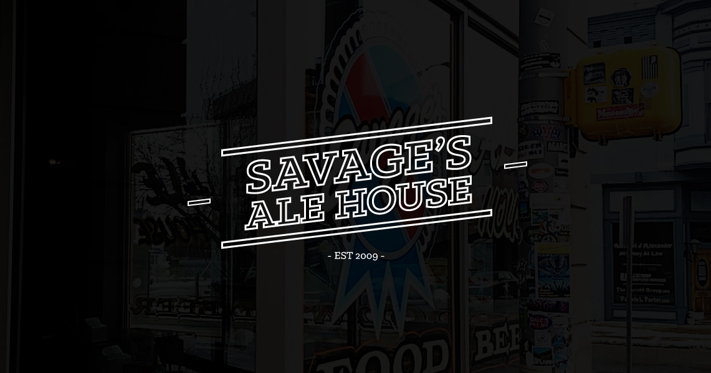
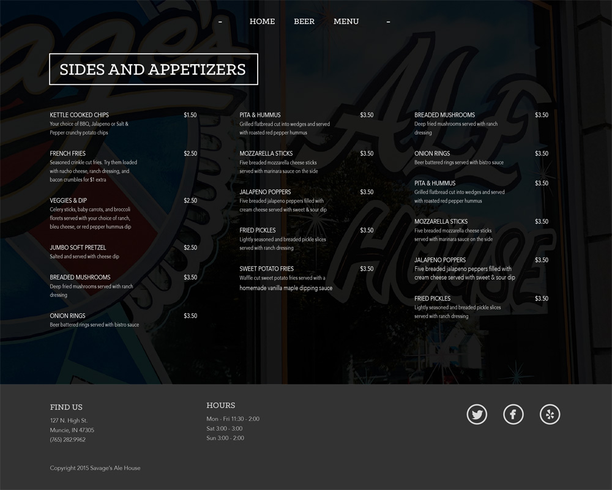

SAVAGE'S ALE HOUSE
Web Design
This was a project to redesign a website of a local business. Due to the fact that a) I personally enjoy this bar, and b) their website was atrocious, Savage's Ale House was an obvious choice for the project. Like a lot of local bars, Savage's had no formal identity standards or logotype/mark to speak of, so I was essentially starting from scratch.
Process
I went with a basic logotype to complement the low key hipster-esque environment of the bar, while keeping the type simple and clean with subtle imagery of the bar itself slightly breaking through the dark backgrounds. The centerpiece and priority of the site design was the bar's large and varied beer menu. A floating and collapsible text menu ensures that users can have instant access to any of the sub menus from anywhere in the site.
